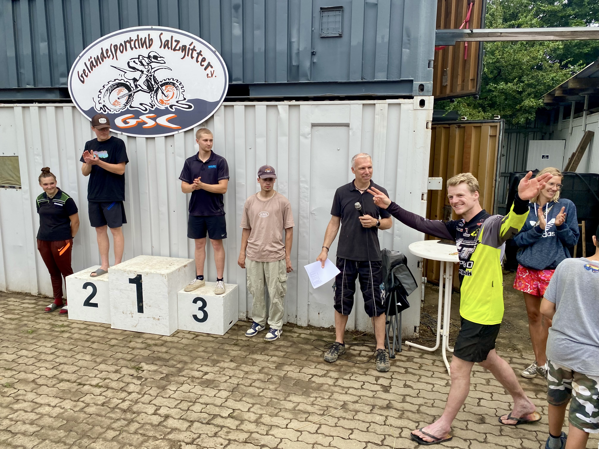

Wie es begann:
Test 108. Im Jahr 1985 beschlossen die 8 Gründungsmitglieder Thomas Rusitzka, Andreas Kalus, Uwe Strack, Anton Baumstark, Helmut Knips, Michael Reichelt, Christian Zadow und George Dick dem wilden und an der Grenze der Legalität stattfindende Crossfahren auf dem Gelände an der Eisenhüttenstraße ein Ende zu setzen.
Ein Verein soll gegründet und das Gelände als Vereinsstrecke gepachtet werden. Gleichzeitig wurde die Gemeinnützigkeit beim Finanzamt beantragt und hat seither Bestand.
Aus den Gründern sind mittlerweile fast 600 Mitglieder geworden, wovon allein 140 Kinder und Jugendliche ihre Trainingsrunden auf dem Hüttenring absolvieren. Bekanntestes Mitglied ist der Vizeweltmeister von 1999 in der 250ccm Motocross WM Pit Beirer. Dieser ist mittlerweile Motorsport Direktor bei KTM.
Vorstand & Organisation
Geschäftsführender Vorstand:
- 1. Vorsitzender: Maike Lehmann
- Stellv. Vorsitzender: Hagen Bormann
- Kassenwart: Yannika Luther
Der erweiterte Vorstand:
- Sportwart: Paul Keller
- Schriftführer: Jens Munser
- Jugendwart: Marcel Gengals, Gordan Schönwälder
Verwaltungsrevisoren:
- Thomas Rusitzka, Bernd Nass
Mitgliedschaft im GSC Salzgitter e.V.
Zur Beantragung der Mitgliedschaft könnt hier direkt den Online Antrag nutzen und bekommt dann kurzfristig eine Rückmeldung für eine Anmeldung auf www.mx-tickets.de. Ab da könnt ihr die Strecke kostenlos nutzen. Eine schriftliche Bestätigung schicken wir euch einige Zeit später, da wir erst einige Anträge sammeln.
Gebühren & Beiträge
- Aufnahmegebühr: Für jedes Neumitglied bis 20 Jahre: 25.- EURO einmalig. Jedes Neumitglied ab 20 Jahre: 75.- EURO einmalig.
- Monatliche Beitragshöhe:
- Kinder bis zum 6. Lebensjahr sind beitragsfrei.
- Kinder vom 7. Lebensjahr bis zum vollendeten 14. Lebensjahr: 3.- EURO.
- Weibliche und männliche Aktive bis zum 20. Lebensjahr: 5.- EURO.
- Weibliche und männliche Aktive ab dem vollendeten 20. Lebensjahr: 8.- EURO.
- Passive Vereinsmitglieder (weiblich oder männlich) ab dem 7. Lebensjahr: 2.- EURO.
Arbeitsdienste
Jedes Mitglied, welches die Strecke im Jahr min. 2 mal nutzt muss einen Arbeitsdienst von 6 Stunden jährlich leisten. Für Kinder unter 16 Jahre sind die Eltern verpflichtet diese Stunden zu erbringen. Als Arbeitsdienst zählen alle Arbeiten die im Sinne des Vereins bzw. der Gemeinschaft erbracht werden. Neben der Strecken- und Anlagepflege sind es auch Kurierfahrten, Aufgaben bei den Veranstaltungen, Einkäufe usw.
Jede ausgeführte Arbeit muss per E-Mail an arbeit@gsc-salzgitter.de kurzfristig formlos gemeldet werden. Sind am Ende der Saison nicht genügen Stunden geleistet wird ein Betrag von 10€ je fehlender Stunde per Lastschrift von den Mitgliedern bzw. den Eltern eingezogen.
Passive Mitgliedschaft & Kündigung
Passive oder aktive Mitgliedschaft kann immer für ein Jahr umgestellt werden. Bei einer passiven Mitgliedschaft muss bei einer Streckennutzung die Gastfahrer Gebühr bezahlt werden. Die Umstellung für eine Saison muss immer bis spätestens 30. Januar erfolgt sein. Änderung bitte an unsere E-Mail Adresse: office@gsc-salzgitter.de
Kündigungen der Mitgliedschaft sind zum Ende eines Kalenderjahrs nur per E-Mail an office@gsc-salzgitter.de möglich.
Gastfahrer
Gastfahrer nur mit Tagesgebühr 20 € je Training. Samstag Vor- und Nachmittag 30 €. Anmeldung ausschließlich über MX Tickets. Eine Anmeldung mit dem Papierformular an der Strecke ist seit 2024 nicht mehr möglich.